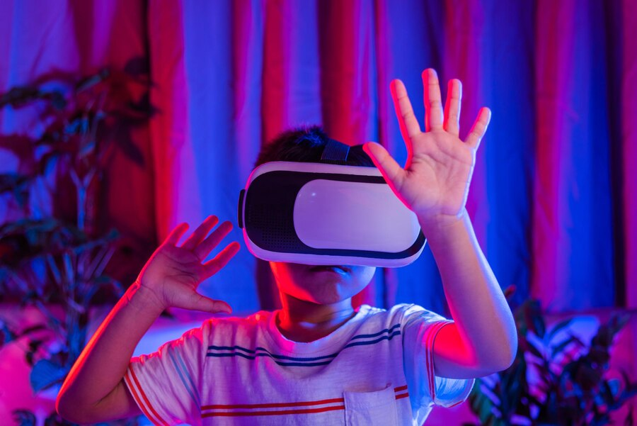
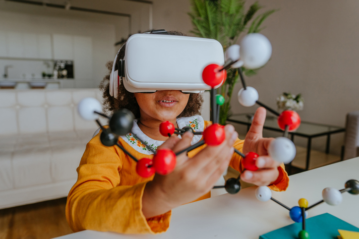

¿Qué es la Realidad Virtual en la Educación?
La realidad virtual (RV) es una tecnología que permite la inmersión del usuario en un entorno digital simulado. En educación, se utiliza para mejorar la experiencia de aprendizaje mediante simulaciones interactivas.
Beneficios de la Realidad Virtual en la Educación
El uso de la realidad virtual en el aula ofrece múltiples beneficios, como el aprendizaje inmersivo, la retención de información mejorada y la posibilidad de explorar conceptos complejos de manera interactiva.

Aplicaciones de la Realidad Virtual en la Educación
La realidad virtual se aplica en diversos campos educativos, como la medicina, la historia, la ciencia y la ingeniería. Permite realizar prácticas sin riesgos y mejorar la comprensión de conceptos abstractos.
